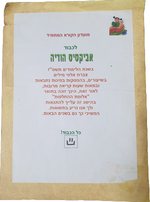
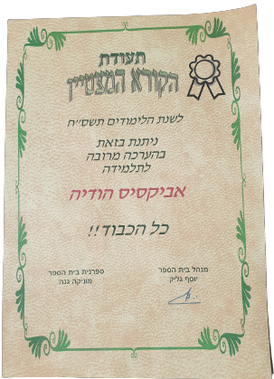
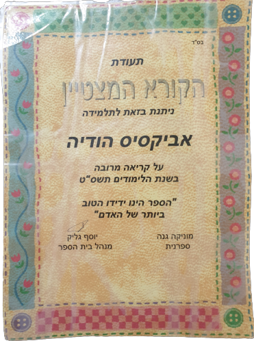

אני לא זוכרת את ברגע שבו הבנתי שאני אוהבת לקרוא ספרים אבל מאותו רגע שהתחלתי- לא הפסקתי.
בזמן החטיבה והתיכון הייתי מבלה בספרייה את רוב זמני הפנוי ומחליפה ספרים ביום 3 פעמים.
הדבר שאני אוהבת יותר מלקרוא ספר בפעם הראשונה- זה לקרוא אותו בפעם השניה והשלישית והרביעית...
וזו הסיבה העיקרית שאני מעדיפה לקנות ספרים ולא לקרוא דרך מנוי- כדי שתמיד אוכל לחזור אליהם בקלות.
בשנים האחרונות התחום של איכות הסביבה קיבל מקום מרכזי אצלי ולכן אני מעדיפה לקנות ספרים יד שנייה
בחנויות כדוגמת "סיפור חוזר".
יש לי גם מעט ספרים דיגטליים באפליקציית עברית שאני אוהבת לקרוא בה- למרות שאני תמיד אעדיף ספר מודפס על פני ספר דיגיטלי.
בזמן חטיבה והתיכון הייתי קוראת שעות- לפעמים גם בזמן שיעור,המשפחה שלי והחברים תמיד
היו קוראים לי תולעת ספרים, כמובן, וזה קיבל תוקף רשמי כשקיבלתי תעודות בחטיבה ובתיכון
שקראתי הרבה ספרים במהלך אותה שנה מכל ביה"ס.



בזכות קריאת הספרים יש לי עברית טובה מאוד, ללא שגיאות כתיב, מה שהביא לי אהבה רבה לידיעת השפה העברית.
הקריאה גם חיזקה אצלי את תשומת הלב לפרטים קטנים- כשקוראים ספרים הסופרים טומנים רמזים מטרימים להמשך העלילה
מה שהשחיז אצלי את הדיוק ותשומת הלב לכל דבר גם בחיים עצמם.